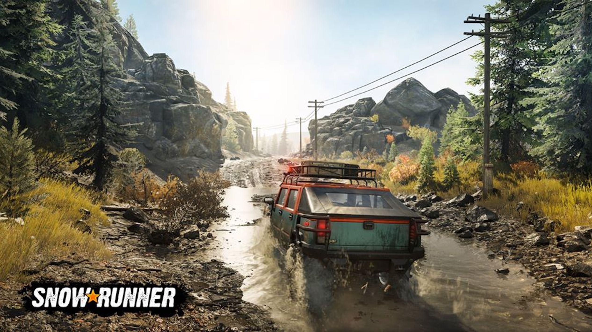
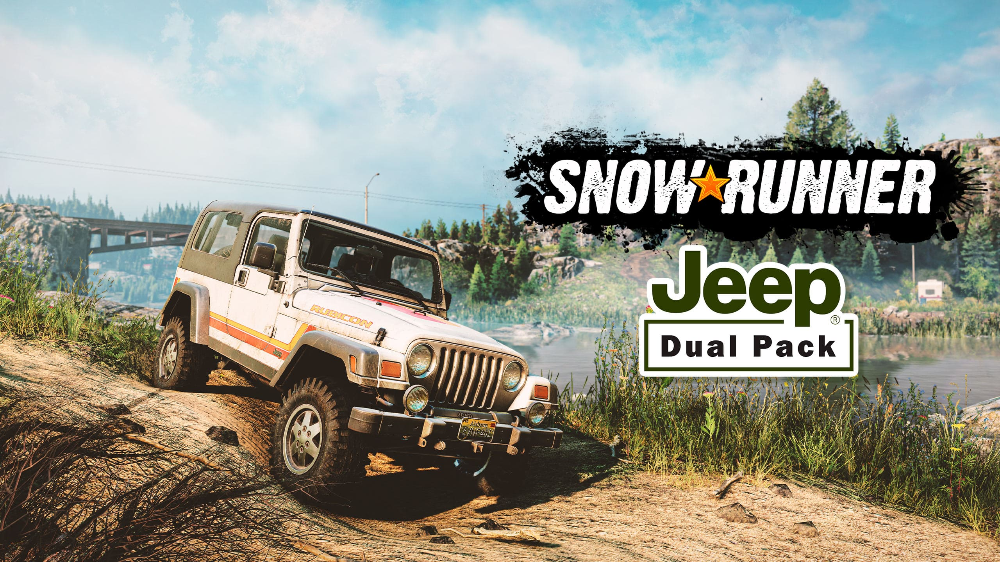
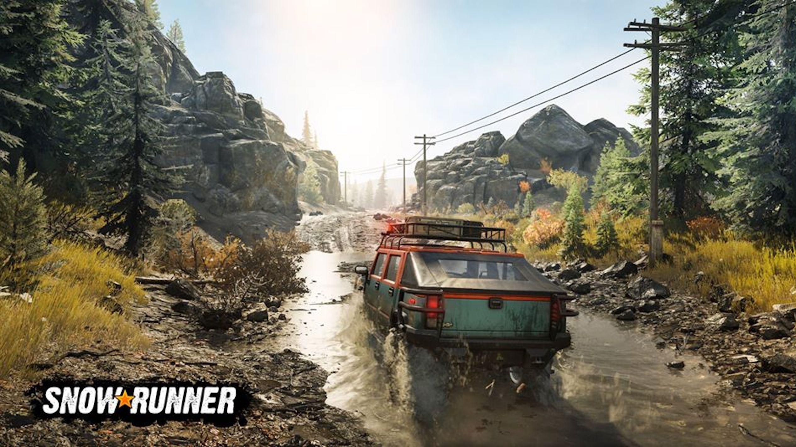
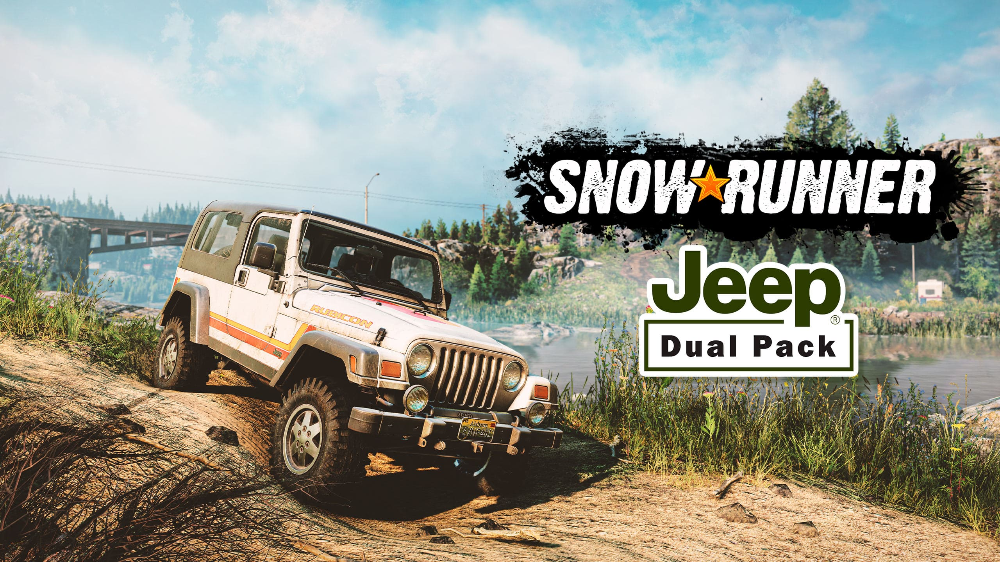
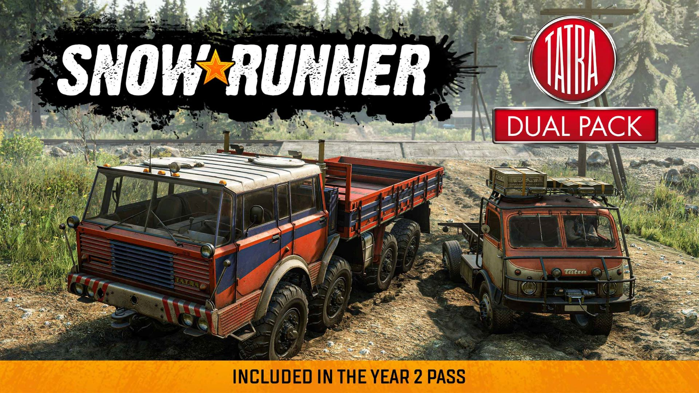
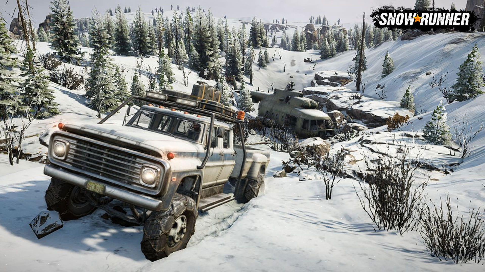
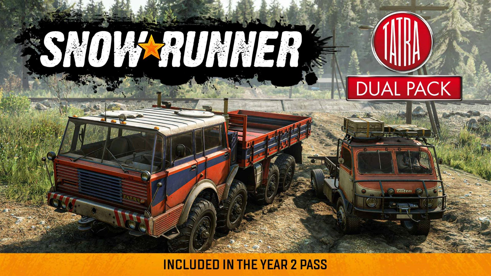
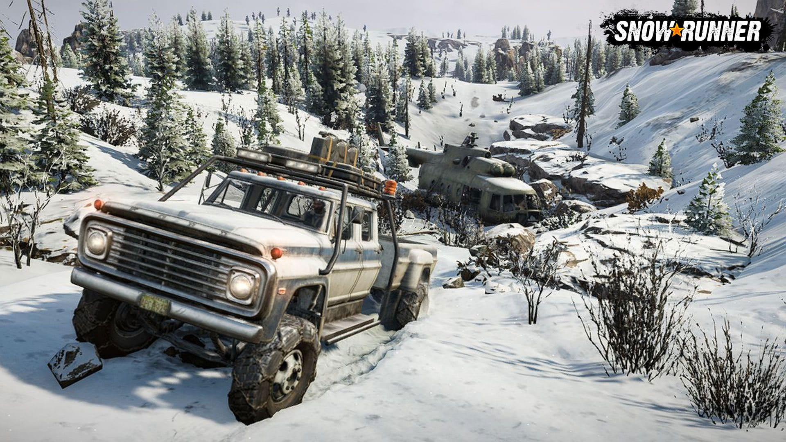
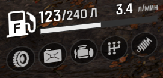

Гемплей Snowrunner має більше 40 різних авто, багато різновидів причепів та обладнання для кожної автівки. Окрім сюжету ви можете виконувати контракти, доручення та проходити змагання на час. За проходження додаткових завданнь ви отримуєте гроші та досвід. Існує 3 локації та в кожнії з них по 4 мапи між якими можна мандрувати. При бажанні можна встановлювати модифікації з сайту, що напряму підв'язується до гри при реєстрації. Кожне авто має 4 типа пошкоджень та можливість ремонту на ходу.
 



 



Пошкодження техніки В ході виконнаня завдань ви можете через необережне кермування пошкодити авто, їдучи через схили чи гочи це може зробити каміння, а через болота та багно впавші дерева. Кожне пошкодження уповільнюе чи погіршує кермування вантажівкою чи авто. Від пробиття баку ви швидко втратите паливо, пошкодження двигуна знизить його роботу та призведе до збільшеного споживання палива чи пошкодження, пошкодженна трансмісія погіршить прохідність, а пробите колесо допоможе застрягнути чи отримати важкокеровану вантажівку.
